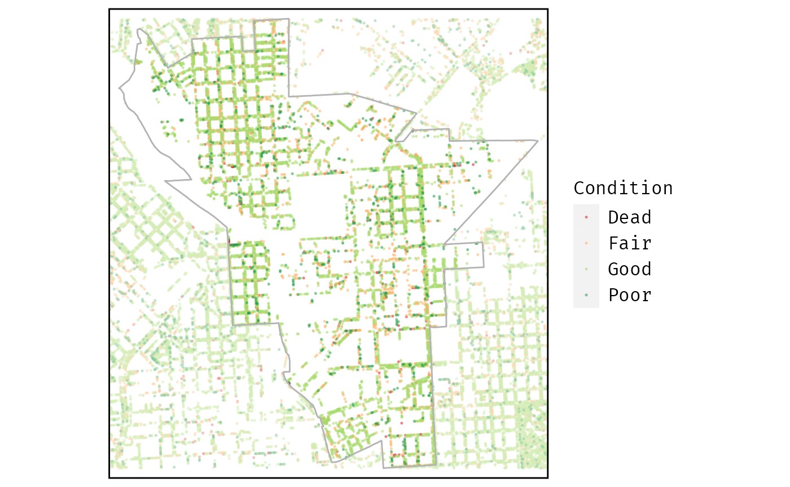

Get locations and location data
get_location.RmdGet location
Supported location types
The “type” of location data that you can access with get_location() is very flexible. You can provide:
- A simple feature object
- A url to a spatial data file compatible with
sf::read_sf() - A url for an ArcGIS MapServer or FeatureServer
- A file path
You can also provide the name of a simple feature object that is either already loaded to the global environment or available to load through any installed package.
Data in packages include exported data that is available when a package is loaded, data that is available in the system files but not loaded (and may sometimes be undocumented), and data that is in the default cache folder path from rappdirs::user_cache_dir(). If you want to use package data that is cached in a different location, you need to provide the file path (or filename and directory) in order to use it with get_location().
All of these parameters are passed from get_location() to get_location_data() so the following section of this vignette includes more details on how the more general function works.
Finally, you can alternatively pass a named list to index that serves as a look-up table for matching the “type” to a an sf object.
Supported parameters to accessing a location
The most basic parameters for accessing a specific location are:
- name (with name_col matching column to filter)
- id (with id_col matching column to filter)
The passed value for name is coerced to character and id is coerced to numeric so, if the “id” column for this type of location is in a character format, you need to treat it as a “name” instead.
Alternatively you can use the location parameter which supports either:
- a valid street address (geocoded with
tidygeocoder::geo()) - a simple feature object or bounding box
Note: as of 2022-02-14, get_location() currently only supports a single address at a time but I expect to update the function so it supports multiple addresses).
If you provide a sf or bbox object, the object is used as a spatial filter either when reading in the data (using the bbox parameter for read_sf_path or read_sf_url) or before returning the data using the sf::st_filter() function.
What is get_location() good for?
Building custom look-up functions
Here is are a few examples showing how you can use get_location() to create new custom look-up functions.
If your location data is from another package, you can use the package parameters passed to get_location_data() to access that data even without loading the package. This approach works best when the package data uses a consistent naming scheme for columns and data to support. This makes it easy to turn the names into parameters as the example below using the nycgeo package.
# NOTE: install nycgeo from GitHub not CRAN
# remotes::install_github("mfherman/nycgeo")
get_nyc_borough <- function(name = NULL, id = NULL, type = "simple") {
data <- "borough_sf"
if (type == "simple") {
data <- paste(data, type, sep = "_")
}
package <- "nycgeo"
get_location(
type = data,
package = package,
name = name,
id = id,
name_col = "borough_name",
id_col = "borough_id"
)
}
get_nyc_borough("Manhattan")
#> old-style crs object detected; please recreate object with a recent sf::st_crs()
#> old-style crs object detected; please recreate object with a recent sf::st_crs()
#> old-style crs object detected; please recreate object with a recent sf::st_crs()
#> Simple feature collection with 1 feature and 6 fields
#> Geometry type: MULTIPOLYGON
#> Dimension: XY
#> Bounding box: xmin: 971160 ymin: 188438.4 xmax: 1010065 ymax: 259550.8
#> Projected CRS: NAD83 / New York Long Island (ftUS)
#> # A tibble: 1 × 7
#> geoid state_fips county_fips county_name borough_name borough_id
#> <chr> <chr> <chr> <chr> <chr> <chr>
#> 1 36061 36 061 New York Manhattan 1
#> # … with 1 more variable: geometry <MULTIPOLYGON [US_survey_foot]>If your location data is sourced from an ArcGIS MapServer or FeatureServer, you can use the locationname and locationname_col parameters from the underlying get_esri_data() function. This avoids the need to download the full dataset every time.
# get_anc looks up the Advisory Neighborhood Council
# Data from Open Data DC https://opendata.dc.gov/datasets/fcfbf29074e549d8aff9b9c708179291
get_anc <- function(name) {
url <- "https://maps2.dcgis.dc.gov/dcgis/rest/services/DCGIS_DATA/Administrative_Other_Boundaries_WebMercator/MapServer/1"
get_location(
type = url,
locationname = toupper(name),
locationname_col = "name"
)
}
get_anc(name = "5B")
#> Layer Type: Feature Layer
#> Geometry Type: esriGeometryPolygon
#> Service Coordinate Reference System: 3857
#> Output Coordinate Reference System: 4326
#> Simple feature collection with 1 feature and 11 fields
#> Geometry type: MULTIPOLYGON
#> Dimension: XY
#> Bounding box: xmin: -76.99753 ymin: 38.92135 xmax: -76.96666 ymax: 38.95024
#> Geodetic CRS: WGS 84
#> objectid anc_id web_url
#> 1 9 ANC 5B http://anc.dc.gov/page/advisory-neighborhood-commission-5b
#> name shape_area shape_len globalid creator
#> 1 5B 0 0 {6DBCF9C2-E269-41C6-AE4D-AC645FFC101D} NA
#> created editor edited geoms
#> 1 NA DCGIS 1.573036e+12 MULTIPOLYGON (((-76.98239 3...Location data can also be loaded from a URL with a GeoJSON or other spatial data file.
Accessing overlapping geographies
Since location supports both addresses and sf objects, you can pull individual locations without knowing the name or id of an area. For example, you can use an address:
# NOTE: mapbaltimore is not currently available on CRAN
# remotes::install_github("elipousson/mapbaltimore")
lookup_tract <- function(address) {
get_location(
type = "baltimore_tracts",
package = "mapbaltimore",
location = address
)
}
lookup_tract("100 Holliday St, Baltimore, MD 21202")
#> Passing 1 address to the Nominatim single address geocoder
#> Query completed in: 1 seconds
#> Simple feature collection with 1 feature and 8 fields
#> Geometry type: POLYGON
#> Dimension: XY
#> Bounding box: xmin: 432552.6 ymin: 179852.2 xmax: 434068 ymax: 180839.8
#> Projected CRS: NAD83(HARN) / Maryland
#> tractce geoid name namelsad aland awater intptlat
#> 1 040100 24510040100 401 Census Tract 401 1191002 1430 +39.2902267
#> intptlon geometry
#> 1 -076.6145019 POLYGON ((432552.6 180801.8...You can also combine multiple approaches to create a look-up function that returns overlapping geography for a named characteristic. For example, the following function takes the name of a school and returns any Baltimore City neighborhoods that overlap with that school’s attendance zone.
lookup_school_neighborhoods <- function(school_name) {
school <-
get_location(
type = "bcps_es_zones_SY2021",
package = "bcpss",
name = school_name,
name_col = "program_name_short"
)
school_neighborhoods <- get_location(
type = "neighborhoods",
package = "mapbaltimore",
location = school
)
return(school_neighborhoods)
}
lookup_school_neighborhoods("Eutaw-Marshburn E")
#> Simple feature collection with 4 features and 5 fields
#> Geometry type: MULTIPOLYGON
#> Dimension: XY
#> Bounding box: xmin: 430345 ymin: 180859.9 xmax: 432750.5 ymax: 182536.5
#> Projected CRS: NAD83(HARN) / Maryland
#> # A tibble: 4 × 6
#> name type acres osm_id wikidata geometry
#> * <chr> <chr> <dbl> <chr> <chr> <MULTIPOLYGON [m]>
#> 1 Druid Heights Residenti… 57.9 12792… NA (((431569.6 181988, 4315…
#> 2 Madison Park Residenti… 102. 12792… NA (((432337.1 181728.9, 43…
#> 3 Sandtown-Winchester Residenti… 260. 12800… Q7416984 (((430729.9 182481.6, 43…
#> 4 Upton Residenti… 188. 12792… Q7899346 (((432361 181396.1, 4323…Get location data
As noted in the previous section, get_location() is largely built around get_location_data(). But, get_location_data() is also a helpful function just by itself.
While the data parameter supports all of the options for the type parameter described in the prior section, get_location_data() also supports named parameters for path or url.
Note: This vignette is a work in progress with additional details to be added soon.
params <- list(
type = "council_districts",
id = 12,
dist = 0.125,
diag_ratio = NULL,
unit = "mi",
package = "mapbaltimore",
layers = c("streets", "neighborhoods", "trees")
)
district <-
get_location(
type = params$type,
package = params$package,
id = params$id
)Selecting a page size
You can use the get_paper function to look up one or more common paper sizes or standard image sizes:
| name | series | size | standard | units | width | height | asp | asp_text | type | orientation |
|---|---|---|---|---|---|---|---|---|---|---|
| Instagram post | NA | post | px | 1080 | 1080 | 1.000000 | 1080:1080 | social | portrait | |
| Instagram story | NA | story | px | 1080 | 1920 | 0.562500 | 1080:1920 | social | portrait | |
| Twitter single image post | NA | post | px | 1200 | 675 | 1.777778 | 1200:675 | social | portrait | |
| Twitter multiple image post | NA | post | px | 700 | 800 | 0.875000 | 700:800 | social | portrait | |
| Twitter image and link post | NA | post | px | 1200 | 628 | 1.910828 | 1200:628 | social | portrait | |
| Twitter cover photo | NA | cover | px | 1500 | 500 | 3.000000 | 1500:500 | social | portrait |
You can also use the geometry of any specified location to set the orientation of the page or the suggested aspect ratio using the sf_bbox_asp function:
sf_bbox_asp(sf::st_bbox(district))
#> [1] 0.930126
sf_bbox_asp((sf::st_bbox(district)), orientation = TRUE)
#> [1] "square"Based on this information, it looks like this map way work well as an Instagram post.
params$paper <- "Instagram post"
# Get a paper by name
paper <-
get_paper(
paper = params$paper
)
# Move width, height, aspect ratio (asp), and units (for map) into params
params$width <- paper$width
params$height <- paper$height
params$asp <- paper$asp
# NOTE: px units are not fully supported by all functions
# NOTE: units supports map-scale options ("in") rather than the unit parameter used by st_buffer_ext
params$units <- paper$unitsThere is one additional consideration in setting the aspect ratio for the map area: the aspect ratio of the content block after marings have been applied. While this is less significant for a Instagram post where full bleed images are appropriate, an example below shows how to get the aspect ratio of a plot, text, or map block after margins have been added to a page. The “px” units associated with the Instagram post paper cannot currently be used with the header and footer option so I passed “npc” units to manually set the margin rather than using the preset options.
get_asp(
paper = "letter",
block_asp = FALSE)
#> [1] 0.7727273
get_asp(
paper = "letter",
margin = c(1, 1, 1.5, 1),
block_asp = TRUE)
#> [1] 0.7647059Finally, the final selections can be used to create a bounding box that reduces the need to pass these same variables to all similar functions. This can also works as a way of effectively saving different “zoom levels” for a map based on different buffer units.
# This information
district_bbox <-
st_bbox_ext(
x = district,
dist = params$dist,
diag_ratio = params$diag_ratio,
asp = params$asp
)
district_trees <-
get_location_data(
location = district_bbox,
data = "trees",
package = "mapbaltimore",
filetype = "gpkg"
)
gt::gt(dplyr::slice_head(district_trees, n = 10))| street_number | street_name | on_street | location_type | side | condition | dbh | height | multi_stem | spp | cultivar | common | genus | x_coord | y_coord | geom |
|---|---|---|---|---|---|---|---|---|---|---|---|---|---|---|---|
| 36 | S CHARLES ST | UNASSIGNED | Street | Side | Fair | 12.5 | 35 | 1 | Platanus x acerifolia | planetree, London | Platanus | -76.61534 | 39.28780 | c(433185.393072185, 180025.527207589) | |
| 20 | S CHARLES ST | UNASSIGNED | Street | Front | Good | 6.0 | 25 | 3 | Betula nigra | birch, river | Betula | -76.61531 | 39.28864 | c(433187.446373906, 180117.789288718) | |
| 20 | S CHARLES ST | UNASSIGNED | Street | Front | Good | 7.0 | 2 | 2 | Betula nigra | birch, river | Betula | -76.61531 | 39.28866 | c(433187.476673959, 180120.3217882) | |
| 20 | S CHARLES ST | UNASSIGNED | Street | Front | Good | 5.0 | 20 | 3 | Betula nigra | birch, river | Betula | -76.61528 | 39.28869 | c(433190.498673416, 180123.357087508) | |
| 20 | S CHARLES ST | UNASSIGNED | Street | Front | Dead | 3.0 | 15 | 2 | Betula nigra | birch, river | Betula | -76.61528 | 39.28866 | c(433190.633873321, 180120.457688098) | |
| 20 | S CHARLES ST | UNASSIGNED | Street | Front | Good | 2.3 | 20 | 1 | Betula nigra | birch, river | Betula | -76.61527 | 39.28863 | c(433191.055573171, 180117.722788649) | |
| 20 | S CHARLES ST | UNASSIGNED | Street | Front | Good | 8.0 | 25 | 3 | Betula nigra | birch, river | Betula | -76.61524 | 39.28869 | c(433193.697172768, 180123.411387426) | |
| 20 | S CHARLES ST | UNASSIGNED | Street | Front | Good | 7.0 | 25 | 3 | Betula nigra | birch, river | Betula | -76.61524 | 39.28866 | c(433193.955672647, 180120.47168802) | |
| 20 | S CHARLES ST | UNASSIGNED | Street | Front | Fair | 12.8 | 15 | 1 | Tilia americana | linden, American | Tilia | -76.61518 | 39.28851 | c(433199.02187122, 180103.449791372) | |
| 20 | S CHARLES ST | UNASSIGNED | Street | Front | Good | 13.8 | 20 | 1 | Tilia cordata | linden, littleleaf | Tilia | -76.61517 | 39.28842 | c(433199.756870866, 180094.466893189) |
ggplot() +
layer_location_data(
data = district_trees,
mapping = aes(color = condition),
size = 0.3,
alpha = 0.4
) +
layer_mask(
data = district,
dist = 100,
color = "gray70",
neatline = TRUE
) +
theme_legend(
position = "bottomleft"
) +
theme_text(
font_family = "Fira Code"
) +
labs(
color = "Condition"
) +
scale_color_brewer(palette = "RdYlGn")